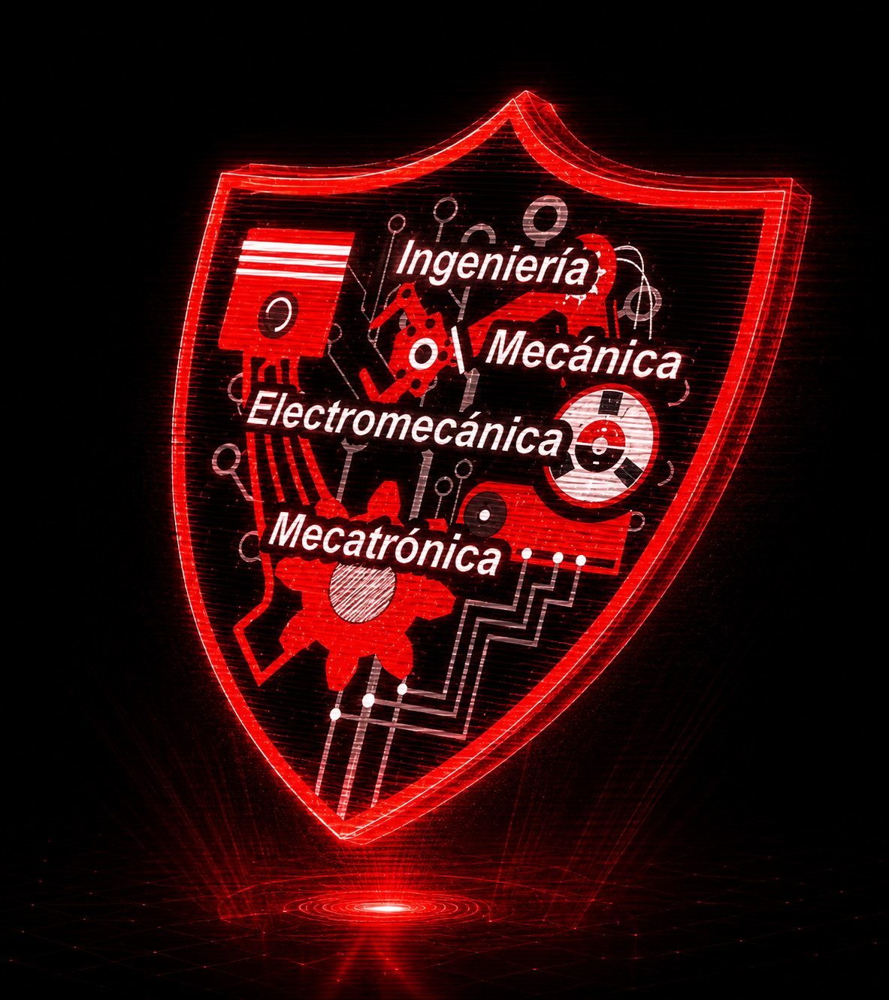

Desde nuestra fundación histórica el 3 de julio, la Facultad Nacional de Ingeniería ha liderado el desarrollo técnico y académico. Las líneas de Mecánica, Electromecánica y Mecatrónica continúan ese legado mediante la investigación, el modelado dinámico y la automatización inteligente al servicio de la sociedad.
Nuestro proyecto insignia para el desfile conmemorativo del 3 de julio. Una demostración real de ingeniería donde convergen el diseño de estructuras mecánicas de gran escala, sistemas de transmisión de potencia electromecánica y algoritmos de control mecatrónico en tiempo real para sincronizar movimientos fluidos y autónomos.
Cada aniversario dejamos una huella en las calles de Oruro y, al mismo estilo de las escenas post-créditos, sembramos la semilla del próximo gran desafío de ingeniería ciberfísica.
Fase 1: El Despertar Mecánico. Primer chasis de alta resistencia con sistemas de transmisión eléctrica sincrónica.
Fase 2: El Nexo Electromecánico. Integración de bancos de baterías de litio de alta descarga y actuadores neumáticos de respuesta rápida.
Fase 3: La Era Animatrónica. Control en lazo cerrado, sensores dinámicos y algoritmos de movimiento autónomo para el coloso del desfile.